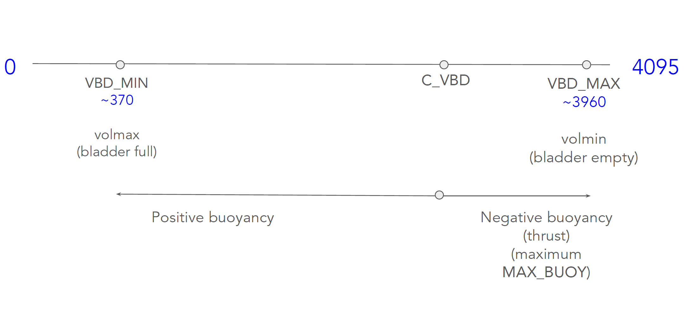
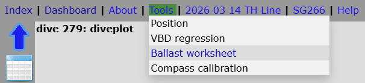
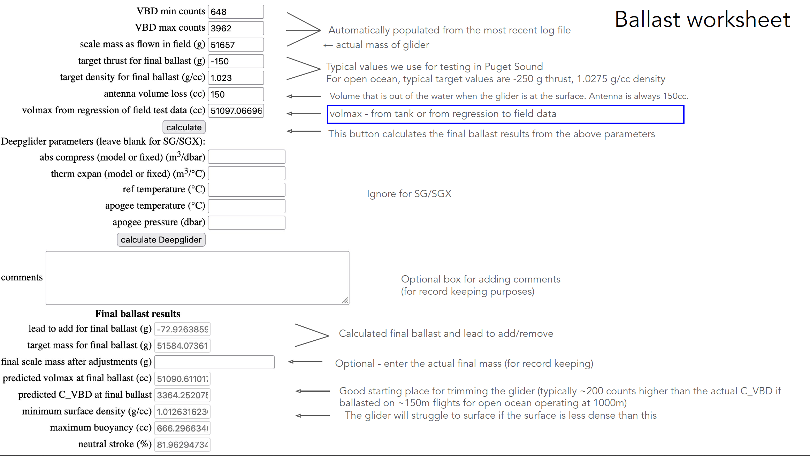
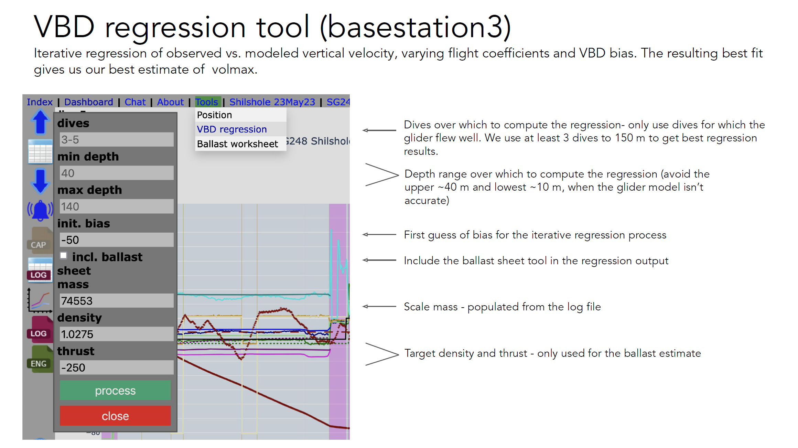
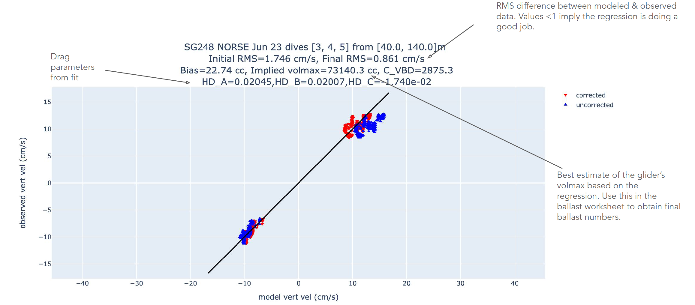
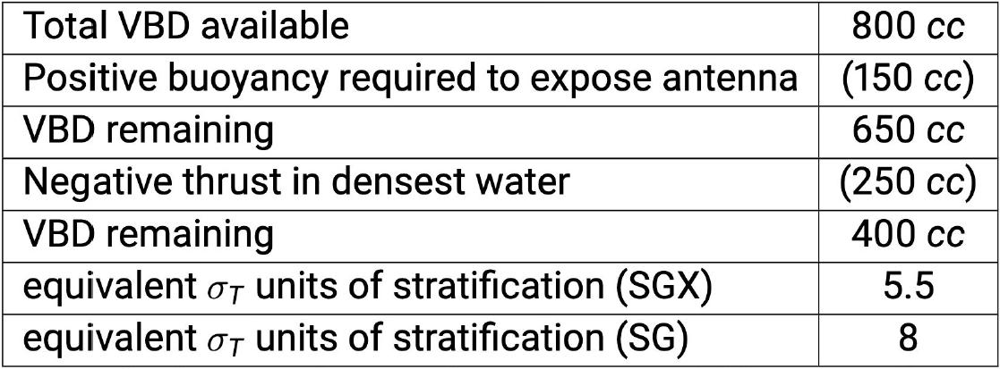
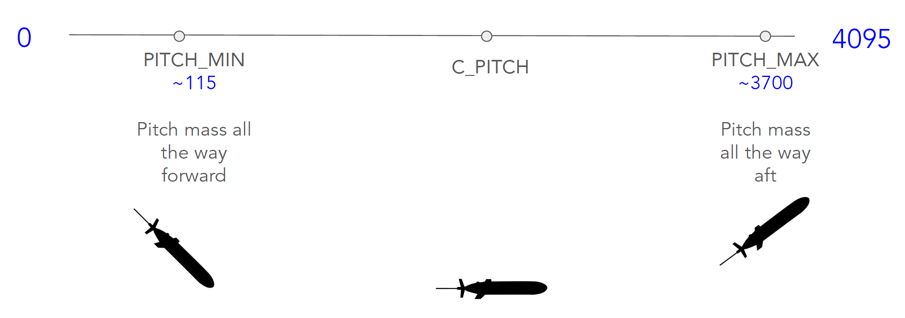

Ballasting
Ballasting Theory
Definitions
Volmax: maximum volume of the glider (i.e., volume when all moveable oil is in the external bladder), in cc’s. Getting an accurate estimate of volmax is key to ballasting. We get an initial estimate of volmax in a tank, and a more refined estimate during the test deployment. Volmax is a constant for a given glider configuration (external payload and VBD settings).
Neutral volume: This is the volume of the glider including external bladder position at which the glider is neutrally buoyant at the desired apogee density. By definitions below, the bladder position at this point is 0cc and C_VBD AD counts.
Thrust: buoyancy in cc relative to the neutral position defined by C_VBD. Negative thrust means the glider is “heavy”.
Target thrust ($MAX_BUOY): This is the desired amount of negative thrust that we want to have at apogee so that we can maintain speed throughout the entire dive.
$C_VBD: The position of the oil reservoir in AD counts that defines where the glider thinks it has zero thrust at apogee density.
Apogee density ($RHO): Reference density in sigma-theta units. Typically set to the most dense water expected to be seen.
VBD_MIN, VBD_MAX: AD limits of the VBD system (VBD_MIN is pumped to max, VBD_MAX is bled to minimum)
Goal of ballasting
Determine the total mass of the glider (i.e., how much lead to add/remove) needed to achieve the desired thrust at a given density while preserving enough reserve positive buoyancy for the glider to surface in the widest possible range of surface densities.
The glider is ballasted according to:
Target density (at max depth, typically 1000 m) in the area of operation.
Thrust – typically 150 to 250 cc. Larger thrusts are needed to overcome strong currents.
Reserve buoyancy – e.g., in areas with a very fresh surface layer, it can be crucial to have enough reserve buoyancy so the glider can surface
Ballasting Strategy

Weigh glider to get scale mass
Obtain an estimate of volmax (e.g., in tank or from test dives)
Compute the target mass needed for a given target density & thrust:
- Target thrust fixes C_VBD because we never need to get heavier than that thrust, so we can set C_VBD such that when bled to VBD_MAX (minimum buoyancy) we will be at target thrust:
\[ C\_VBD = VBD\_MAX – \frac{thrust}{VBD\_CNV} \]
- With C_VBD fixed we know how positive we can get: it’s the difference between neutrally buoyant at C_VBD (when the glider has minimum volume, volmin) and having maximum buoyancy when pumped to VBD_MIN:
\[ volmax = volmin + (VBD\_MIN – C\_VBD)*VBD\_CNV \]
- Because volmin = mass / RHO, we can rearrange (b) to solve for mass: \[ mass = \rho*(volmax - (VBD\_MIN - C\_VBD)*VBD\_CNV) \]
Difference between scale mass and target mass = amount of lead to add or remove
Double check that at Volmax, glider will be able to raise antenna (~150cc) in lowest density surface water expected: \[ \rho_{min} = \frac{mass}{volmax - 150} \]
*VBD_CNV = cc’s of oil per AD count = -0.2453 (constant, same for SG and SGX)
Tools
Ballast Worksheet
Access from the Tools menu on the basestation3 visualization:

Ballast worksheet: generic tool to compute the target mass based on scale mass, volmax, etc.
- We use this when we already have an estimate of volmax from the ballast tank
VBD regression: uses dive data to estimate the glider’s volmax by regressing observed vertical velocity (w) against w from the glider flight model.

We use this after Puget Sound test dives to get a more accurate estimate of volmax
That volmax can then be input in the ballast worksheet to get final ballast numbers prior to deployment
VBD Regression

Output of VBD Regression Tool

Ballasting Tips
VBD
The VBD for contains around 800 cc’s of moveable oil, i.e., available buoyancy (same for SG and SGX). To determine the density range (stratification) where your glider can operate:
- Start with the total buoyancy (cc’s of oil) available
- Subtract the cc’s of oil needed to lift the antenna out of the water
- Subtract the cc’s of oil needed for negative buoyancy (thrust), usually specified at the deepest/densest water to be encountered.
- Divide the remaining cc’s of oil by the rule of thumb (50 or 70 cc/σθ):

Pitch

Lead placement to affect pitch
We aim approximately for –60° pitch when the glider is at the surface and ±18° when the glider is diving/climbing
- If pitch is too flat/steep, lead can be placed forward/aft
We aim very roughly for C_PITCH=2400 (± a few hundred AD counts)
- If C_PITCH is much lower than this (i.e., pitch center is too far forward, so the glider can’t pitch down enough and surface angle is low), place lead forward
Roll
We look for vehicle rolls that are symmetric to port/starboard and roughly ±18°
If the vehicle is not rolling enough to one or both sides, lead can be placed on the port/starboard
The SGX mass shifter can roll up to ±80° (compared to ±40° for the original SG), but needs this extra throw to achieve sufficient vehicle roll to turn. To achieve symmetric rolls with SGX, lead placement is typically asymmetrical